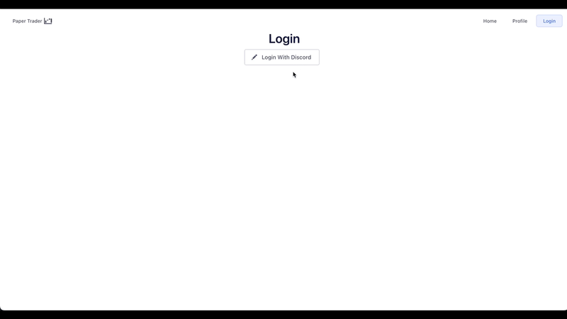

4/100 Days of Code
Paper Trader
Discord OAuth
- I brought over parts of the Discord OAuth code to my React Paper Trader app! Currently it has the basic functionalitly I needed, where clicking to Log In with Discord sends the user to Discord’s authorization page and redirects back to the app with the
codeparameter needed.- Note that to prevent a CSRF issue, a random string is generated to append to the Discord Authorization. As things progress, I would like to switch it to be a JWT, but that may not be necessary according to this discussion and this article.
- Currently testing out a new React router hook,
useSearchParamswhich will be very helpful for the next step when sending aPOSTrequest to the Discord API. Not sure yet if I’ll have the Discord redirect to a new route which will call post to the Discord API, or include it in the Home pageuseEffect.

Learnings/Thoughts
Axios Post Request
- As I spent more time looking into the Axios API, and multiple Stack Overflow discussions, it seems like my approach is the best way to achieve what I want to do. My current assumption for why is because Axios posting tries to send the values I want in the body rather than as URL parameters. The simplest fix is to use string template literals to build up the URL string explicitly in the Axios post function.
- A small tweak would be to change the
redirect_urito also be a string template literal and have the value be based on the environmental variables.
- A small tweak would be to change the
await axios.post(
'https://discord.com/api/oauth2/token',
`client_id=${clientId}&client_secret=${clientSecret}&grant_type=authorization_code&redirect_uri=http://localhost:${port}&scope=identify&code=${code}`,
headers: {
'Content-Type': 'application/x-www-form-urlencoded'
}
)Next Steps
- I will need to add the second portion of the Discord OAuth functionality which is accessing the user’s Discord information. At the moment I only have the authorization code for the user’s information, but need to send that along with other information to the Discord API.
- In addition, there will need to be some refactoring to properly separate the concerns of storing the user information and breaking down some components such that they aren’t too big.